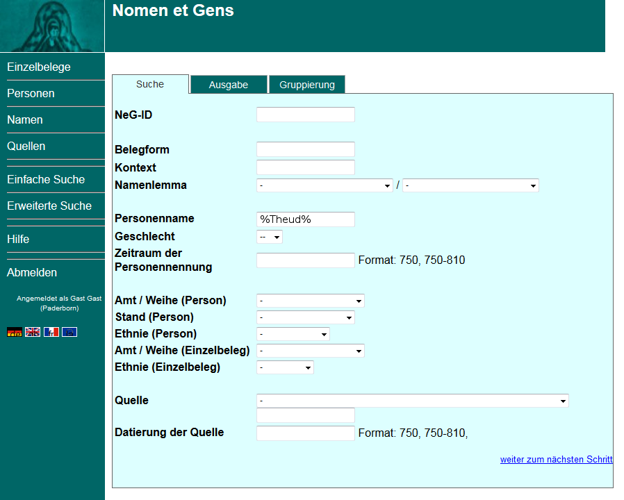
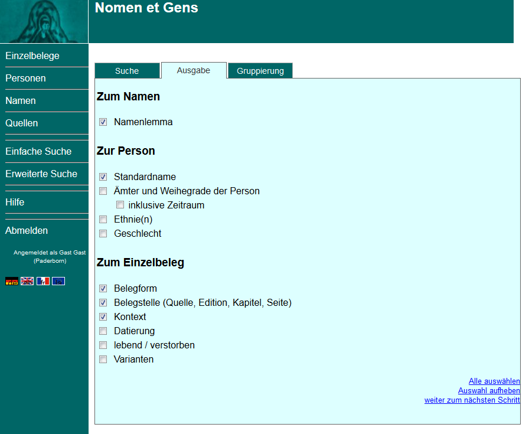
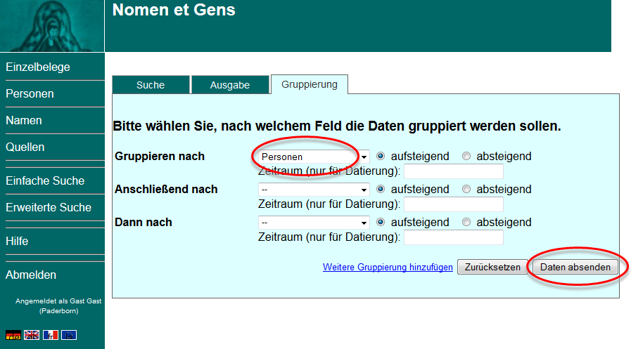
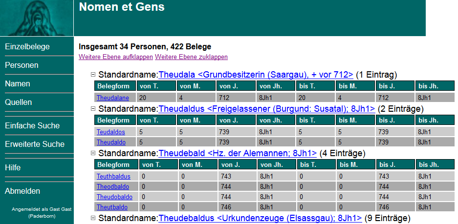
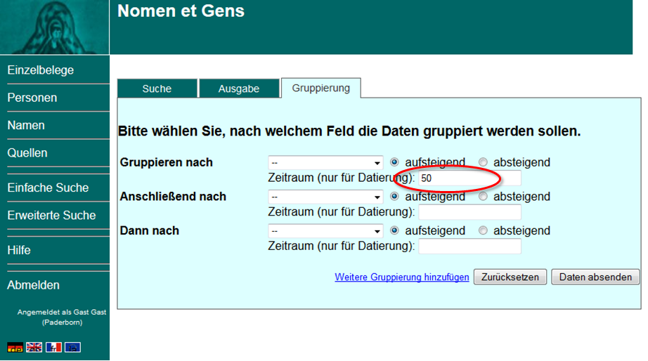

Abkürzungen in allen Feldern richten sich nach dem Abkürzungsverzeichnis des Lexikons für Theologie und Kirche und ergänzend dem Lexikon des Mittelalters. Weitere Abkürzungen:
EB = Einzelbeleg (eine konkrete Namensform in einer Quelle)
PE = Personeneintrag
PmbZ = Prosopographie der mittelbyzantinischen Zeit (http://pom.bbaw.de/pmbz/)
Die Datenbank "Nomen et Gens" (NeG) kann nach vier Kategorien durchsucht werden: Nach Einzelbelegen (einer einzelnen Namensnennung in einer Quelle), Personen (Standardnamen), Namen (linguistische Lemmata) und Quellen.
Dazu gibt es zwei verschiedene Suchfunktionen, die einfache Suche und die erweiterte Suche. Hinweise zur einfachen Suche finden Sie direkt unter dem Suchfenster (hier).
In der erweiterten Suche geben Sie Ihre Suchanfrage in drei Schritten ein. Diese drei Schritte entsprechen den drei Registerkarten Suche, Ausgabe und Gruppierung. Hier können Sie:
Groß- und Kleinschreibung werden nicht berücksichtigt.
Mehrere Suchbegriffe im selben Suchfenster werden nicht durch "und/oder" verbunden (Zu Platzhaltern s.u.).
Einträge in verschiedenen Suchfenstern werden automatisch mit "und" verknüpft.
Anders als in vielen anderen Datenbanken wird bei Nomen et Gens keine automatische Vervollständigung Ihres Suchbegriffes vorgenommen. Die Suche findet nur solche Einträge, die dem Suchbegriff tatsächlich exakt entsprechen. Für eine ungenaue Suchanfrage können Sie das % als Platzhalter eingeben (Suchanfrage trunkieren). Das % steht für eine beliebige Menge an Zeichen an jeder Stelle (auch am Anfang) des Suchbegriffes.
Die Trunkierung des Suchbegriffes mit dem % am Ende Ihrer Eingabe ist für die meisten Suchanfragen sinnvoll.
Mehrere Suchbegriffe im selben Fenster werden nicht durch "und/oder" verbunden. Setzen Sie deshalb bitte auch zwischen mehreren Suchbegriffen ein %.
Sind Sie sich unsicher bei der Schreibweise eines Namens o.ä. ersetzen Sie das/die betreffende/n Zeichen durch das %.
Im unten abgebildeten Beispiel ist die Zeichenfolge %Theud% als Suchbegriff nach "Personenname" eingetragen. Mit dieser Eingabe erhalten Sie all jene Daten, die Personen mit dem Namenbestandteil "theud" zugeordnet sind - also neben merowingischen Königen mit den Namen "Theudebert" und "Theuderich" auch Namensträger wie "Theudericus" und "Theudofridus".
Genau so werden auf diese auch Personen gefunden, die im Standardnamen über Ihre Verbindung mit "%Theud%" identifiziert sind (z. B. Berchar oder Childebert ).
Personennamen bestehen in der Datenbank aus einem Eigennamen und weiteren Kennzeichen zur eindeutigen Identifizierung einer Person, einem sogenannten "Standardnamen". Dieser enthält ggf. moderne Ordnungszahlen, einen Beinamen ("d. Große" o. ä.), ein Amt oder eine Tätigkeitsbeschreibung der Person, und das Todesdatum. Der merowingische König Theuderich III. z. B. trägt in der Datenbank den Standardnamen "Theuderich III. ".
Wegen der Zusätze im Standardnamen würde die Suche nach "Theuderich" über das Suchfeld "Personenname" 0 Treffer ergeben, weil die Suche nur solche Ergebnisse berücksichtig, die Ihrem Suchbegriff exakt entsprechen. Um die verschiedenen Personen die "Theuderich" im Standardnamen enthalten zu finden, müssten Sie in diesem Fall Ihre Suche trunkieren ("Theuderich%").
Artikel, Präpositionen u. Konjunktionen werden im Standarndamen abgekürzt (der/die/das = d., von = v., und = u. ...).
Auch folgende Ämter sind in Standardnamen abgekürzt angegeben: Ebf. (Erzbischof), Bf. (Bischof), Äbt. (Äbtissin), Kg. (König), Ks. (Kaiser), Hz. (Herzog), Gf. (Graf), Pfalzgf. (Pfalzgraf).

Jeder Datensatz in der Datenbank hat eine Nomen et Gens-ID. Wenn Ihnen die NeG-ID einer Person, einer Quelle, einer Belegform oder eines Namens (Lemma) bekannt ist, können Sie diese hier eingeben und so zu diesem Datensatz gelangen. Es führen allerdings nur ganz korrekte Einträge zu einem Suchergebnis. Sie können in diesem Fenster nicht trunkieren!
Die NeG-ID setzt sich zusammen aus einem Buchstaben als Abkürzung für die Kategorie des Datensatzes (B = Einzelbeleg, N = Namen, P = Personen, Q = Quellen, E = Editionen) und einer laufende Nr. (Karl der Große hat z. B. die NeG-ID P7404).
Dieses Fenster über das Sie direkt zu einer NeG-ID gelangen finden Sie nicht nur in der Suche, sondern auch in der Kopfzeile der Datenbank über jedem Datensatz ('"Springe zu NeG-ID").
Die Belegform ist eine konkrete Namensnennung in einer Quelle, ein sogenannter Einzelbeleg. Die Einzelbelege sind in ihrer in der Quelle verwendeten, deklinierten und eventuell vom modernen Personennamen abweichend Schreibweise Form eingetragen (z.B. der Einzelbeleg "Theotoricho" (NeG-ID B60541) für König Theuderich III. in der Datumszeile einer Urkunde).
Die verschiedenen Schreibweisen eines Namens werden im Projekt Nomen et Gens einem einheitlichen Namenlemma zugeordnet, das nach sprachwissenschaftlichen Kriterien vergeben wird. Die Zuweisung von Lemmata geschieht über konkrete Nemensformen, also die Einzelbelege. Die Einzelbelege zu König Theuderich III. z.B. sind dem Namen (= linguistischem Lemma) ÞeudarÄ«kaz zugeordnet (NeG-ID N131).
Über das Suchfeld Namenlemma können Sie sich also alle Varianten eines Namens anzeigen lassen, die unter einem Lemma zusammengefasst sind. Sie können hier auch nach allen Namen mit demselben Erstglied oder Zweitglied in lemmatisierter Form suchen.
Der Kontext ist der Satz, der einen Einzelbeleg enthält. Er wird mit in die Datenbank aufgenommen. Über dieses Fenster können Sie die Sätze wie in einer Volltextsuche durchsuchen. Auch hier müssen sie trunkieren, wenn Sie nicht den exakten vollständigen Kontext als Suchbegriff eintragen! Wollen sie z.B. alle Einträge zu den Osterfeiern Karls des Großen (NeG-ID P7404) erhalten, können sie im Kontext nach %pascha% suchen (während Sie im Feld Personenname "Karl d. Große%" eintragen).
Hier können Sie nach einem Personennamen in seiner standardisierten Form, dem sogenannten Standardnamen, suchen(z.B. "Theuderich III. ").
Hier können Sie das Geschlecht von Personen als Suchkriterium auswählen. Sie können Frauen (f) und Männern (m) auswählen, oder solche Einzelbelege, bei denen das Geschlecht nicht zugewiesen werden kann (?).
Hier können Sie den Suchzeitraum eingrenzen. Der "Zeitraum der Personennennung" bezieht sich dabei auf die Datierung einer konkreten Namensnennung in einer Quelle (eines sogenannten Einzelbeleges. Solche Einzelbelege können natürlich auch nach dem Tod einer Person entstanden sein. Wollen Sie nur zeitgenössische Belege angezeigt bekommen, müssen Sie den Suchzeitraum über das Suchfenster "Datierung der Quelle" begrenzen (s.u.).
Möglich ist sowohl die Eingrenzung auf ein einzelnes Jahr, als auch "von-bis" Einträge. Den Suchzeitraum können Sie entweder im Format "Jahrhundert" (also z. B. "7Jh"), "erste oder zweite Hälfte eines Jahrhunderts" ("7Jh1" oder "7Jh2"), oder mit exakten Jahreszahlen eingeben ("656-686". Das "bis" Zeichen ist ein einfacher Bindestrich "-"). Dabei entspricht "7Jh" den Jahren "601-700", "7Jh2" den Jahren "651-700".
Bitte beachten Sie: Bei Eingabe eines einzelnen Jahres werden alle Quellen als Ergebnis berücksichtigt, deren Datierungszeitraum das eingegebenen Jahr enthält! Das heißt, wenn sie z.B. den Suchzeitraum über dieses Fenster auf 666 begrenzen, werden Ihnen auch Belege angezeigt, die mit der Angabe 650-700 datiert sind.
Sie können nach Ämtern bzw. Weihegraden (Amt/Weihe), nach dem sozialen Stand einer Person oder nach ethnischen Zuschreibungen (Ethnie) suchen. Diese Merkmale können Sie entweder in den Einzelbelegen suchen oder aber in den Datensätzen zu einer Person. Das heißt, Sie suchen entweder nach unmittelbaren Zuschreibungen in frühmittelalterlichen Quellen (über die Einzelbelege), oder nach den Zuweisungen der modernen Forschung und der NeG-Bearbeiter_innen (über die Person).
Hier beschränken Sie die Suche auf bestimmte Quellen.
Der Name einer narrativen Quelle besteht in der Datenbank aus dem Namen des mittelalterlichen Autors und dem Werktitel. Die Vita des hl. Eligius (P22123) z. B., die Audoenus von Rouen (P21507) zwischen 660 und 684 verfasst hat, finden Sie unter: "Audoenus von Rouen, Vita Eligii episcopi Noviomagensis" (Q1672).
Der Titel von Urkunden besteht aus einer Datierung in vierstelligen Zahlen, dem Namen des Ausstellers/der Ausstellerin und dem Namen des Empfängers/der Empfängerin (Eine Schenkung, welche der elsässische Herzog Liutfrid (P14217) und seine Frau Hiltrud (P14577) zwischen 731 und 739 dem Kloster Weißenburg machten, lautet also: 0731-0739 Herzog Liutfrid mit Frau Hiltrud für Weißenburg; Q1761).
Im oberen Suchfeld können Sie per Ausklappliste eine verfügbare Quelle auszuwählen. Im darunter liegenden Suchfeld können Sie einen beliebigen Suchbegriff eintragen.
Auch diesen Suchbegriff können Sie trunkieren. So durchsuchen Sie z.B. mit dem Eintrag "%vita%" alle Quellen, die diese Zeichenfolge an irgendeiner Stelle im Namen tragen - das heißt, auf diese Weise können Sie alle Viten durchsuchen. Geben Sie z. B. "%chronic%" ein, finden Sie sowohl das "Chronicon Anianense" (Q94362) als auch die Chronik des Fredegar ("Fredegar, Chronica"; Q2233).
Die Quellentitel aller Urkunden in der Datenbank beginnen mit einer Datierung in einer vierstelligen Zahl. Die erste Ziffer ist immer eine "0". Mit der Eingabe "0%" im Feld "Quelle" können Sie deshalb alle in der Datenbank enthaltenen Urkunden durchsuchen.
Der Quellenbestand der Datebank Nomen et Gens wächst beständig. Eine Liste aller Quellen, die in der der Datenbank derzeitzugänglich sind, finden sie auf der Projekthomepage unter Quellen Urkunden sind hier über die Edition aufgeführt. Welche Edition verwendet wurde, sehen sie im Einzelbeleg unter "Quelle". Im Quellenformular stehen ausführlichere Angaben zur Edition.
Hier können Sie den Suchzeitraum über die Entstehungszeit der durchsuchten Quellen begrenzen. Möglich ist sowohl die Eingrenzung auf ein einzelnes Jahr, als auch "von-bis" Einträge. Den Suchzeitraum können Sie entweder im Format "Jahrhundert" (z. B. "7Jh"), "erste oder zweite Hälfte eines Jahrhunderts" ("7Jh1" oder "7Jh2"), oder mit exakten Jahreszahlen eingeben ("656-686"). Das "bis" Zeichen ist ein einfacher Bindestrich "-". Dabei entspricht "7Jh" den Jahren "601-700", "7Jh2" den Jahren "651-700".
Wenn Sie Quellen jeder Zeitstellung durchsuchen wollen, aber als Ergebnis nur Einzelbelege für eine bestimmte Zeit angezeigt bekommen möchten, können Sie den Suchzeitraum über das Feld "Zeitraum der Personennennung" eingrenzen.
Bitte beachten Sie: Bei Eingabe eines einzelnen Jahres werden alle Quellen als Ergebnis berücksichtigt, deren Datierungszeitraum das eingegebenen Jahr enthält! Das heißt, eine Urkunde, deren Ausstellung nur grob zwischen 650 und 700 datiert werden kann, wird Ihnen auch dann angezeigt, wenn Sie den Suchzeitraum über dieses Fenster auf 666 begrenzen.
Wenn Sie die Eingabe Ihrer Suchparameter beendet haben, klicken Sie entweder unten rechts auf "weiter zum nächsten Schritt" oder sie gehen auf den Reiter "Ausgabe" oder den Reiter "Gruppierung".

Auf der Registerkarte Ausgabelegen Sie fest,welche DatenIhnen als Suchergebnis angezeigt werden sollen.Klicken Sie zum Auswählen in die Kästchen vor den Einträgen. Sie können auch unten rechts alle Ausgabefelder auswählen. Mit einem zweiten Klick heben Sie die Auswahl einer Ausgabekategorie wieder auf.
Sie müssen mindestens ein Ausgabefeld auswählen - sonst bekommen Sie keine Ergebnisse angezeigt!
"Auswahl aufheben" - Hier können Sie auch ihre gesamte bisherige Auswahl aufheben.
Ihre Suchfrage schicken sie im nächsten Reiter "Gruppierung" ab. Sie können entweder unten rechts auf "weiter zum nächsten Schritt" klicken, oder über den Reiter "Gruppierung" gehen. So können Sie auch wieder zurück zu den Sucheinstellungen unter "Suche", wenn Sie Änderungen vornehmen wollen.
Hier schließen Sie Ihren Suchauftrag ab. Klicken Sie dazu auf den Button "Daten absenden" unten rechts.
Mit dem Button "zurücksetzen" löschen Sie ALLE ihre bisherigen Einträge in den drei Registerkarten der erweiterten Suche.
Außerdem können Sie in dieser Registerkarte einstellen, wie die Daten ihrer Ergebnismenge sortiert werden sollen. Wenn Sie keine Eingabe vornehmen, werden Ihnen die Daten standardmäßig alphabetisch oder je nach gewählter Ausgabe chronologisch geordnet angezeigt.

Wenn Sie einstellen möchten, wie ihr Suchergebnis geordnet wird, können Sie hier die Daten gruppieren lassen. Die Einzelbelege werden dann nach den von Ihnen eingegebenen Kriterien zu Gruppen zusammengefasst. Sie können auswählen, ob die Ergebnisse aufsteigend oder absteigend sortiert werden sollen.
Standardmäßig sind drei Suchfelder zur Gruppierung angezeigt. Indem Sie auf "Weitere Gruppierung hinzufügen" klicken, erstellen Sie weitere Ordnungsebenen.
Die Suchergebnisse können nach den in der Aufklappliste enthaltenen Kategorien gruppiert werden: Namen [= Lemma], Personen [= Standardnamen], Belege, Quellen, Quellengattung, Varianten (in Handschriften), Datierung Einzelbeleg, Datierung Quelle, Geschlecht [der im Einzelbeleg genannten Person], Amt/Weihe Person, Stand Person, Ethnie Person, Erstglied [eines Lemmas], Zweitglied [eines Lemmas].
Im oben abgebildeten Beispiel ist im Feld "Gruppieren nach" "Personen" ausgewählt. Wenn sie nun z.B. bei Suche im Feld "Personenname "Theud%" eingeben, werden Ihnen die gefundenen Belege nach einzelnen Personen geordnet aufgelistet, deren Standardnamen mit "Theud" beginnen:

Haben Sie mehrere Gliederungskategorien ausgewählt, werden die Ergebnisse in entsprechend vielen Ebenen angezeigt. Die Reihenfolge der Ebenen entspricht der Eingabe in der Registerkarte Gruppierung.
Die Ebenen werden als Listen ausgegeben, die Sie auf- und zuklappen können. Zunächst ist nur die erste Ebene angezeigt. Die zweite Ebene ist unter dem Eintrag der ersten Gruppierung zugeklappt zu sehen. Sie können entweder über "weitere Ebene aufklappen" in allen Gruppen die nächste Ebene anzeigen lassen, oder Sie klicken auf die nächste Ebene in einer einzelnen Gruppe. Genau so können Sie Ebenen auch entweder über den Hyperlink "weitere Ebene zuklappen" oder einzeln wieder zuklappen.
Die Einträge zu Einzelbelegen, Personen und Quellen sind als Hyperlink gestaltet, so dass Sie direkt zum jeweiligen Datensatz gehen können.
Wenn Sie Ihre Ergebnisse nach der Datierung von Quellen oder Einzelbelegen gruppieren, werden die Ergebnisse standardmäßig in Schritten von 25 Jahren geordnet (wie im Bild oben zu sehen). Wenn Sie nach einem anderen Zeitraum gruppieren wollen, können Sie im Feld "Zeitraum (nur für Datierung)" eine beliebige Zahl (auch 1 ist möglich) als Anzahl von Jahren eingeben.

Im Reiter Gruppierung schließen Sie ihre Suchanfrage ab.Um die Suche zu starten, klicken Sie auf den Button "Daten absenden" unten links.